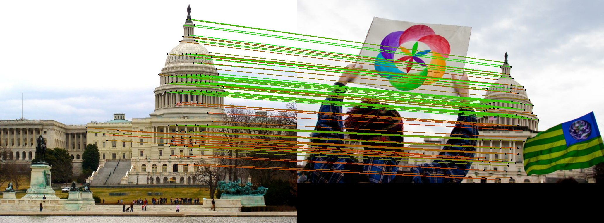

Everything to know about locating points in images: the two very different halves of the task (human/animal pose and interest-point matching), how modern keypoint models work, how they are evaluated, and runnable code for the leading open models.
Author
Benedict Thekkel
1. What is Keypoint Detection?
Keypoint detection predicts a set of 2-D points in an image (plus, usually, a confidence per point). That one sentence hides a fork in the road: Hugging Face’s keypoint-detection tag covers two tasks that share almost nothing except the output type.
(x, y, score) per named keypoint, joined by a fixed skeleton
(x, y, score) + a descriptor vector per point
Trained with
Human-annotated joint labels
Self-supervision / homography consistency; no labels
Used for
Fitness apps, sports analytics, AR avatars, animal behaviour
SfM, SLAM, visual localisation, panorama stitching, AR tracking
Models
ViTPose, RTMPose, HRNet, Sapiens2, MoveNet
SuperPoint, DISK, ALIKED, SIFT/ORB (+ matchers)
Success means
The elbow is on the elbow
The same physical point is found in both images
Half A is a supervised localisation problem. Half B is a repeatability problem: a keypoint is good if and only if it comes back at the same physical 3-D point when the camera moves, the light changes, or the image is rescaled. A detector that fires on beautiful, stable, non-repeatable points is worthless. That is why half B always ships a descriptor and is always followed by a matcher (SuperGlue, LightGlue, LoFTR) - the points only earn their keep once they are put into correspondence across views.
This notebook makes both halves runnable.
Input. An RGB image (H x W x 3). Pose models are usually top-down, so they additionally consume a person bounding box per instance - which means they are chained behind an object detector (see 02_Object_Detection). Matchers consume an image pair.
Neighbouring tasks:
Task
Relation
Typical tool / notebook
Object detection
Supplies the person boxes for top-down pose
02_Object_Detection (RT-DETR, DETR)
Instance segmentation
Same instances, pixel masks instead of joints
03_Image_Segmentation, 12_Mask_Generation
Image feature extraction
Global (one vector per image) rather than local
16_Image_Feature_Extraction (DINOv3, CLIP)
Depth / 3-D
Downstream of matching (triangulation, SfM)
00_Depth_Estimation, 15_Image_to_3D
Human mesh recovery
Pose + shape as a full SMPL-X body, not just joints
HMR2.0 / 4D-Humans (vendor runtime)
Face landmarks
Same maths, 68-478 points, its own ecosystem
MediaPipe FaceMesh, dlib
2. Real-World Use Cases
The two halves are deployed in almost disjoint industries, and the constraint that decides the model is different in every row.
Use case
Domain
Consumes / produces
Dominant constraint
Rep counting and form feedback
Consumer fitness (Apple Fitness+, Peloton, Tempo)
Phone/TV camera video -> 17 joints per frame -> joint angles
On-device latency (30+ FPS), battery, works in a dim living room
Sports analytics and officiating
Broadcast sport (Hawk-Eye, Second Spectrum, Stats Perform)
Speed on a phone; graceful failure on low-texture scenes
Medical / industrial image registration
Radiology, PCB inspection
Two scans -> matches -> alignment transform
Sub-pixel accuracy; domain is nothing like the training data
What the leaderboard number hides. COCO AP is measured on well-lit photos with 1-3 clearly visible people, and 80.9 AP does not tell you what happens on the thing that actually breaks pose in production: occlusion and crowds (top-down models inherit every miss of the person detector, and hallucinate a full skeleton inside a box that contains two overlapping people), truncation (a half-body crop yields confidently wrong hips), and temporal jitter - a per-frame model with 2 px of noise looks fine in AP and looks terrible as animation, which is why production stacks always add a temporal filter the benchmark never sees. Top-down cost also scales linearly with person count, so a model that is real-time on a selfie is not real-time on a football pitch.
On the local-feature side the hidden failure is appearance and viewpoint change: a matcher tuned on phototourism (MegaDepth) collapses on night imagery, on repetitive facades (every window matches every window), on textureless indoor walls, and under extreme scale change. And matching quality is judged after RANSAC: a matcher that returns 2000 matches with a 30% inlier rate is worse than one that returns 300 at 90%, because the geometry solver, not the raw match count, is what the downstream SfM/SLAM consumes.
3. How Modern Keypoint Detection Works
3A. Pose estimation: the top-down vs bottom-up fork
Before any architecture, multi-person pose forces a choice:
Top-down - run a person detector, crop each box, run a single-person pose model on each crop. Accuracy is high (the person fills the input, so effective resolution is high), but cost scales linearly with the number of people, and every detector miss is a pose miss. This is what ViTPose, HRNet, RTMPose and Sapiens2 do, and it is what wins on COCO.
Bottom-up - detect all keypoints in the image at once, then group them into people. OpenPose groups with Part Affinity Fields (learned limb vector fields); HigherHRNet groups with associative embeddings. Cost is constant in person count and it degrades gracefully in crowds, but grouping is fragile when limbs overlap, and accuracy trails top-down.
Single-stage / one-shot (YOLO-pose, RTMO, 2023-2024) - regress boxes and their keypoints jointly in one pass. A pragmatic middle: constant-ish cost, near-top-down accuracy, real-time.
3B. The architectural progression (pose)
DeepPose (2014) - a CNN regressing joint coordinates directly. Simple, and a dead end: a fully-connected head throws away spatial structure and the regression target is highly non-linear.
Heatmap regression: Stacked Hourglass (2016), CPM (2016) - the pivot. Instead of predicting (x, y), predict a per-keypoint heatmap: a H/4 x W/4 map with a Gaussian blob at the joint. This preserves spatial structure, is fully convolutional, gives a free confidence, and turns a hard regression into an easy dense classification. It has dominated ever since.
The catch: you decode with an argmax over a downsampled grid, so you inherit a quantisation error of up to half a heatmap cell. The classic fix is the quarter-offset shift toward the second-highest neighbour; the modern fixes are DARK (2020, model the heatmap as a 2-D Gaussian and use a Taylor expansion around the argmax) and UDP (2020, fix the unbiased coordinate transform between input and heatmap space). VitPoseImageProcessor.post_process_pose_estimation does the DARK-style modulation for you (kernel_size=11).
The other catch: heatmaps cost num_keypoints x H x W of memory, which is why 133- or 308-keypoint whole-body models are heavy, and why SimCC/RTMPose (2022) replaced the 2-D heatmap with two 1-D coordinate classifications (x and y separately) - almost the same accuracy, a fraction of the decode cost.
OpenPose (2017) - the bottom-up landmark, PAFs for grouping, first real-time multi-person system. Still the reference for crowd robustness in the classical literature; its own runtime is a C++ vendor stack.
SimpleBaseline (2018) and HRNet (2019) - SimpleBaseline showed a ResNet plus three deconvolutions is a shockingly strong baseline. HRNet then kept a high-resolution branch alive through the whole network (instead of downsample-then-upsample) and became the default backbone for half a decade.
Transformers (2021-2022) - TransPose and TokenPose added attention over keypoint tokens. ViTPose (2022) made the point that you do not need a clever architecture at all: a plain, non-hierarchical ViT backbone plus a lightweight deconvolution decoder beats everything, and it scales. ViTPose-H hits ~80.9 AP on COCO test-dev; ViTPose++ (2023) adds mixture-of-experts heads so one backbone serves COCO, AI Challenger, MPII, AP-10K, APT-36K and COCO-WholeBody at once. This is the model this notebook runs.
Real-time and edge (2022-2024) - RTMPose (CSPNeXt + SimCC head, ~75.8 AP at 90+ FPS on a laptop CPU), RTMO (one-stage, crowd-capable), YOLO-pose / YOLO26-pose, MoveNet and MediaPipe Pose (on-device, tens of milliseconds on a phone).
Human-centric foundation models and whole-body (2024-2026) - Sapiens (2024) and Sapiens2 (2026) pretrain a high-resolution ViT on ~1B human images and fine-tune one backbone for pose, body-part segmentation, normals and depth; Sapiens2-pose predicts 308 keypoints (body + feet + hands + 274 facial points) at native 1K resolution. In parallel the field moved from joints to meshes: HMR2.0 / 4D-Humans and SMPL-X-based recovery give a full 3-D body, and diffusion-prior methods (e.g. SDPose, 2025) push out-of-domain robustness. 3-D lifting (MPJPE on Human3.6M/3DPW) is now a mainstream deliverable rather than a research niche.
The vendor-package trap. The most-cited pose systems are nottransformers models: MMPose (RTMPose, RTMO, HRNet), Ultralytics YOLO-pose (AGPL-3.0 - a real licensing hazard for closed products), MediaPipe, OpenPose (non-commercial research licence) and DeepLabCut all ship their own runtimes. They belong in your architecture diagram, not in a transformers cell. What is transformers-native today: ViTPose / ViTPose++ and Sapiens2 - which happen to be the accuracy leaders anyway.
3C. The architectural progression (interest points and matching)
Hand-crafted (1999-2011) - SIFT (DoG scale-space + 128-D gradient histogram; still an astonishingly strong baseline), SURF, ORB (FAST corners + rotated BRIEF, binary, patent-free, the engine of ORB-SLAM). Zero training, milliseconds, and still what ships in most embedded SLAM.
Learned detector + descriptor (2018-2020) - SuperPoint (self-supervised via homographic adaptation: label your own corners by warping the image with random homographies and keeping what survives; one shared encoder, two heads - a 65-channel keypoint head with a “no keypoint” dustbin, and a 256-D descriptor head). Then D2-Net (“describe-and-detect”), R2D2, DISK (2020, trained with reinforcement learning on the reward “did this match survive geometry?”), and ALIKED (2023, deformable descriptors, very light).
Learned matching (2020-2023) - the bigger jump. SuperGlue (2020) treats matching as a graph-attention + optimal-transport problem over the two keypoint sets, using self- and cross-attention plus a dustbin for unmatched points; it roughly doubled the usable match rate. LightGlue (2023) rebuilt it to be adaptive: it predicts confidence per layer and stops early on easy pairs and prunes points it has already decided are unmatchable, making it faster and easier to train than SuperGlue at equal or better accuracy.
Detector-free / semi-dense (2021-2024) - LoFTR skips keypoints entirely: coarse-to-fine transformer matching over dense feature grids, which is the only thing that works on low-texture surfaces where no corner exists. EfficientLoFTR (CVPR 2024) makes it ~2.5x faster than LoFTR and competitive with SuperPoint+LightGlue.
3-D-grounded matching (2024-2026) - DUSt3R / MASt3R invert the pipeline: regress a 3-D pointmap for both images and read the correspondences off it, which gives matching for free under extreme viewpoint change. Expensive, but the direction the Image Matching Challenge has moved in.
Trade-off cheat sheet:
Approach
Family
Accuracy
Speed
Notes
ORB + brute force
classic
low
fastest
no GPU, no training, binary descriptors; fine for SLAM front-ends
SIFT + ratio test
classic
good
medium
still competitive on planar/HPatches; scale-invariant by construction
SuperPoint + LightGlue
sparse learned
very good
fast
the workhorse; best accuracy-per-millisecond
DISK / ALIKED + LightGlue
sparse learned
very good+
fast
more, denser keypoints; often the IMC baseline of choice
EfficientLoFTR
semi-dense
very good
medium
works where there are no corners (textureless walls)
MASt3R
3-D grounded
best under extreme change
slow
needs real GPU budget; overkill for stitching
Pose approach
Accuracy
Cost in a crowd
Streaming
Example
Top-down heatmap
best
linear in #people
yes (per frame)
ViTPose, HRNet, Sapiens2
Bottom-up (PAF / assoc. emb.)
good
constant
yes
OpenPose, HigherHRNet
One-stage / SimCC
very good
near-constant
yes
RTMPose, RTMO, YOLO-pose
Mesh recovery (SMPL-X)
3-D body, not just joints
linear
no (usually)
HMR2.0, 4D-Humans
4. Evaluation Metrics
Pose: OKS, the IoU of keypoints
You cannot use IoU on a point. COCO’s answer is Object Keypoint Similarity (OKS), which plays exactly the role IoU plays in object detection: it turns a predicted skeleton and a ground-truth skeleton into a single similarity in [0, 1], and then AP is averaged over OKS thresholds 0.50:0.05:0.95 exactly as box AP is averaged over IoU thresholds.
\(d_i\) = Euclidean distance in pixels between predicted and ground-truth keypoint \(i\).
\(s^2\) = the object scale, i.e. the segmentation area of the person. Dividing by it is what makes OKS scale-invariant: 10 px of error on a distant 40-px-tall person is a catastrophe, and on a 400-px-tall person it is nothing.
\(k_i = 2\sigma_i\) = the per-keypoint tolerance constant. This is the subtle part. The \(\sigma_i\) were measured from the disagreement between human annotators: eyes and nose are labelled very consistently (\(\sigma = 0.025\)-\(0.026\)), hips are not (\(\sigma = 0.107\)). So OKS forgives you 4x more error on a hip than on an eye. Using uniform sigmas silently changes the metric.
\(v_i\) = visibility flag; invisible ground-truth keypoints are excluded from both sums, so a model is never punished for a joint no annotator could see.
PCK / PCKh - the older, simpler family: the fraction of keypoints whose error is under a threshold tied to the person’s size. \(\text{PCK@}\alpha\) uses \(\alpha \cdot \max(h, w)\) of the person box; PCKh@0.5 (MPII’s metric) uses half the head-segment length, which is more stable than the torso. It gives one number per joint, which is diagnostically nicer than AP, but it saturates - once everyone is above 90% PCKh it stops discriminating, which is why COCO/OKS took over.
3-D:MPJPE (mean per-joint position error, mm, after root/pelvis alignment) and PA-MPJPE (a.k.a. Reconstruction Error: the same after a Procrustes alignment that removes global scale/rotation - it measures pose shape only, and is always the smaller, kinder number). Human3.6M sits around 40 mm MPJPE for good methods.
Interest points: repeatability, matching score, and AUC
Local features are not evaluated by “did you find the right point” (there is no right point) but by downstream geometry:
Repeatability - given a known homography between two views, the fraction of keypoints detected in image A that are re-detected within eps px (usually 3) of their warped location in image B.
Matching score (M.S.) - the fraction of detected keypoints that end up as a correct match, i.e. detection and description scored jointly.
Homography estimation AUC @ 3 / 5 / 10 px (HPatches) - the headline number. Estimate H with RANSAC from the matches, warp the four image corners with both the true and the estimated H, take the mean corner error, and report the area under the cumulative error curve up to 3, 5 and 10 px. This measures the only thing that matters: does the match set produce the right transform?
mAA (mean Average Accuracy) on the Image Matching Challenge / MegaDepth - the same idea for full 6-DoF relative pose: fraction of pairs whose rotation and translation error fall under a series of thresholds.
Speed. For pose, quote ms per person (top-down) or FPS at N people; for matching, ms per pair at a fixed max-keypoint budget, since latency depends strongly on how many keypoints you let the detector emit.
import numpy as np# COCO's 17 keypoints, in the canonical order every COCO-trained model emits.COCO_KEYPOINTS = ["nose", "left_eye", "right_eye", "left_ear", "right_ear","left_shoulder", "right_shoulder", "left_elbow", "right_elbow","left_wrist", "right_wrist", "left_hip", "right_hip","left_knee", "right_knee", "left_ankle", "right_ankle",]# The per-keypoint sigmas COCO measured from inter-annotator disagreement.# Small sigma = annotators agree = the metric is strict there (eyes, nose).# Large sigma = annotators disagree = the metric is forgiving there (hips, knees).COCO_SIGMAS = np.array([.26, .25, .25, .35, .35, .79, .79, .72, .72,.62, .62, 1.07, 1.07, .87, .87, .89, .89,]) /10.0def oks(pred, gt, area, visibility=None, sigmas=COCO_SIGMAS):"Object Keypoint Similarity. pred/gt: (K, 2) in pixels. area: person area in px^2."if visibility isNone: visibility = np.ones(len(gt)) d2 = ((pred - gt) **2).sum(axis=1) # squared pixel distance per keypoint k =2* sigmas # per-keypoint tolerance e = d2 / (2* area * k **2+ np.spacing(1)) # the exponent of the Gaussian keep = visibility >0# invisible GT keypoints are excludedreturnfloat(np.exp(-e[keep]).mean())def pck(pred, gt, box_wh, alpha=0.2, visibility=None):"Percentage of Correct Keypoints: error < alpha * max(box_w, box_h)."if visibility isNone: visibility = np.ones(len(gt)) d = np.linalg.norm(pred - gt, axis=1) thr = alpha *max(box_wh) keep = visibility >0returnfloat((d[keep] < thr).mean())# A fabricated skeleton and a prediction that is off by 6 px on EVERY joint.rng = np.random.default_rng(0)gt_kp = rng.uniform([100, 100], [300, 500], size=(17, 2))pred_kp = gt_kp +6.0/ np.sqrt(2) # constant 6 px error, same for every jointbig_area =200*400# a large, close person (~400 px tall)small_area =40*80# the same person far away (~80 px tall)print(f"OKS, 6 px error, large person : {oks(pred_kp, gt_kp, big_area):.3f}")print(f"OKS, 6 px error, small person : {oks(pred_kp, gt_kp, small_area):.3f}")print(f"PCK@0.2, large person : {pck(pred_kp, gt_kp, (200, 400)):.3f}")# The same 6 px error is a near-perfect match on a big person and a total miss on# a small one - that is the object-scale normalisation doing its job.# What the sigmas do: put the SAME 6 px error on one joint at a time and watch the# per-keypoint contribution swing by 4x between an eye and a hip.print()for name, sigma inzip(COCO_KEYPOINTS, COCO_SIGMAS): d2 =6.0**2 contribution = np.exp(-d2 / (2* big_area * (2* sigma) **2))print(f"{name:15s} sigma={sigma:.3f} exp term for a 6 px miss = {contribution:.3f}")# Uniform sigmas would score the eyes and the hips identically. COCO deliberately# does not: AP would then be dominated by joints humans cannot even label reliably.
OKS, 6 px error, large person : 0.974
OKS, 6 px error, small person : 0.623
PCK@0.2, large person : 1.000
nose sigma=0.026 exp term for a 6 px miss = 0.920
left_eye sigma=0.025 exp term for a 6 px miss = 0.914
right_eye sigma=0.025 exp term for a 6 px miss = 0.914
left_ear sigma=0.035 exp term for a 6 px miss = 0.955
right_ear sigma=0.035 exp term for a 6 px miss = 0.955
left_shoulder sigma=0.079 exp term for a 6 px miss = 0.991
right_shoulder sigma=0.079 exp term for a 6 px miss = 0.991
left_elbow sigma=0.072 exp term for a 6 px miss = 0.989
right_elbow sigma=0.072 exp term for a 6 px miss = 0.989
left_wrist sigma=0.062 exp term for a 6 px miss = 0.985
right_wrist sigma=0.062 exp term for a 6 px miss = 0.985
left_hip sigma=0.107 exp term for a 6 px miss = 0.995
right_hip sigma=0.107 exp term for a 6 px miss = 0.995
left_knee sigma=0.087 exp term for a 6 px miss = 0.993
right_knee sigma=0.087 exp term for a 6 px miss = 0.993
left_ankle sigma=0.089 exp term for a 6 px miss = 0.993
right_ankle sigma=0.089 exp term for a 6 px miss = 0.993
What this notebook evaluates on. Nothing big: a single COCO val2017 photo for pose, and one phototourism image pair (two views of the US Capitol, from the SuperGlue repo) for matching. That is a smoke test. A real pose evaluation means COCO val2017 + person_keypoints_val2017.json through pycocotools COCOeval; a real matching evaluation means HPatches AUC or IMC mAA. Both are far beyond what a demo notebook should download. Human3.6M, 3DPW and ScanNet are gated - you must apply.
Denser keypoints; strong IMC baseline. Not loadable in transformers 5.x - DISK itself is not a registered model type, so the config raises KeyError: 'disk'
Textureless scenes where no corner exists; ~2.5x faster than LoFTR
ALIKED
0.7M
BSD-3
detector + descriptor
deformable descriptor heads
Tiny + accurate; not transformers-native yet (use kornia)
SIFT / ORB
0
BSD (OpenCV)
classic
DoG / FAST+BRIEF
No GPU, no training; still the SLAM front-end of record
MASt3R
~600M
CC-BY-NC
3-D-grounded matcher
DUSt3R pointmap head
Extreme viewpoint change; heavy
Who wins what.Accuracy: Sapiens2 (pose) and MASt3R / ALIKED+LightGlue (matching). Speed: RTMPose and MoveNet (pose, but neither is transformers-native), SuperPoint+LightGlue (matching, and it is). Size: SuperPoint at 1.3M params is the cheapest useful deep model in this notebook by two orders of magnitude. Tie that back to section 2: the fitness app takes MoveNet/RTMPose, the sports-broadcast rig takes ViTPose++ or Sapiens2, the SLAM front-end takes ORB or SuperPoint+LightGlue, and the panorama stitcher takes whatever runs in 20 ms.
Too big for a 12 GB card (fp16):sapiens2-pose-5b (~10 GB weights alone, no headroom for a 1K-resolution activation map). vitpose-plus-huge (632M) and sapiens2-pose-1.9b do fit, but leave little room; this notebook runs the 90M and 0.4B checkpoints.
Everything below runs on a single 12 GB GPU (RTX 3060) or on CPU, and every model loads through Hugging Face transformers - no ultralytics, no mmpose, no kornia. Package roles:
pillow - image I/O and all the drawing (skeletons, keypoints, match lines)
opencv-python - required by Sapiens2’s heatmap decoder, and used here for RANSAC (findHomography, findFundamentalMat) and the ORB baseline. Guarded everywhere so the notebook degrades gracefully without it.
pyecharts + pandas - the benchmark chart and table
Two API notes that will save you time:
There is no keypoint-detection pipeline in transformers. Detection goes through AutoModelForKeypointDetection (SuperPoint is currently the only entry) or the task-specific VitPoseForPoseEstimation / AutoModelForPoseEstimation. Matching does have a pipeline: pipeline("keypoint-matching"), backed by AutoModelForKeypointMatching (LightGlue, SuperGlue, EfficientLoFTR).
The two small feature models (SuperPoint, LightGlue) stay in fp32: they are 1-12M params, so fp16 buys nothing, and their non-maximum suppression and soft-assignment steps are numerically twitchy in half precision. The pose models use dtype (fp16 on GPU), with the heatmaps cast back to fp32 before decoding, because the DARK-style decoder runs through OpenCV on float arrays.
All downloads (sample images, HF cache) land in DL_tasks/datasets/, which is gitignored.
# Everything runs through Hugging Face transformers - no ultralytics / mmpose / kornia.# %pip install -q torch transformers accelerate pillow pyecharts pandas# opencv-python is required by Sapiens2's pose decoder, and used here for# RANSAC homography estimation and the classical ORB baseline.# %pip install -q opencv-python
import ctypesimport ctypes.utilimport gcimport timeimport urllib.requestfrom pathlib import Pathimport torchfrom dotenv import find_dotenv, load_dotenv# Knowledge/.env sets HF_TOKEN - authenticated HF Hub requests get higher rate limitsload_dotenv(find_dotenv(usecwd=True))device ="cuda:0"if torch.cuda.is_available() else"cpu"dtype = torch.float16 if device !="cpu"else torch.float32if device !="cpu":print(torch.cuda.get_device_name(0))print("device:", device)def vram(tag=""):"Report current GPU memory (allocated / reserved). No-op on CPU."if torch.cuda.is_available(): alloc = torch.cuda.memory_allocated() /1e9 reserved = torch.cuda.memory_reserved() /1e9print(f"VRAM {tag:20s}{alloc:5.2f} GB allocated / {reserved:5.2f} GB reserved")def free_memory():"Collect garbage, empty the CUDA cache, and return freed CPU RAM to the OS." gc.collect()if torch.cuda.is_available(): torch.cuda.empty_cache() torch.cuda.ipc_collect()# glibc keeps freed CPU allocations in its arenas instead of returning them# to the OS, so RSS compounds across model sections (cpu-offloaded weights# live in system RAM). malloc_trim(0) hands the freed arenas back. See# dl-visualization-and-memory.instructions.md - not optional on a 12 GB box.try: ctypes.CDLL(ctypes.util.find_library("c") or"libc.so.6").malloc_trim(0)exceptException:pass# All downloads go to DL_tasks/datasets/ (gitignored)DATA_DIR = Path("../../datasets")DATA_DIR.mkdir(exist_ok=True)HF_CACHE =str(DATA_DIR /"hf_cache")
NVIDIA GeForce RTX 3060
device: cuda:0
from PIL import Image, ImageDrawSAMPLES = {# A COCO val2017 photo containing a person - the pose input."pose": ("keypoint_pose.jpg", "http://images.cocodataset.org/val2017/000000000139.jpg"),# Two phototourism views of the US Capitol (from the SuperGlue repo) - the matching pair."view_a": ("keypoint_capitol_a.jpg","https://raw.githubusercontent.com/magicleap/SuperGluePretrainedNetwork/master/""assets/phototourism_sample_images/united_states_capitol_98169888_3347710852.jpg", ),"view_b": ("keypoint_capitol_b.jpg","https://raw.githubusercontent.com/magicleap/SuperGluePretrainedNetwork/master/""assets/phototourism_sample_images/united_states_capitol_26757027_6717084061.jpg", ),}paths = {}for key, (fname, url) in SAMPLES.items(): p = DATA_DIR / fnameifnot p.exists(): urllib.request.urlretrieve(url, p) paths[key] = ppose_image = Image.open(paths["pose"]).convert("RGB")image_a = Image.open(paths["view_a"]).convert("RGB")image_b = Image.open(paths["view_b"]).convert("RGB")pair = [image_a, image_b]print("pose image:", pose_image.size, "| pair:", image_a.size, image_b.size)# The COCO 17-keypoint skeleton, written out explicitly. Every COCO-trained pose# model emits keypoints in exactly this order, and this edge list is what turns a# point cloud into a recognisable human. (ViTPose also exposes it as `model.config.edges`.)COCO_EDGES = [ (15, 13), (13, 11), (16, 14), (14, 12), (11, 12), # legs + pelvis (5, 11), (6, 12), (5, 6), # torso (5, 7), (7, 9), (6, 8), (8, 10), # arms (0, 1), (0, 2), (1, 3), (2, 4), (3, 5), (4, 6), # head + head-to-shoulder]LIMB_COLORS = {"leg": (0, 200, 255), "torso": (0, 255, 120),"arm": (255, 160, 0), "head": (255, 60, 160),}EDGE_GROUP = ["leg"] *5+ ["torso"] *3+ ["arm"] *4+ ["head"] *6def draw_skeleton(img, keypoints, scores, thr=0.3, radius=4, width=3):"Draw a COCO-17 skeleton on a copy of `img` with PIL. keypoints: (17, 2) array." out = img.copy() d = ImageDraw.Draw(out)for (i, j), group inzip(COCO_EDGES, EDGE_GROUP):if scores[i] > thr and scores[j] > thr: d.line([tuple(keypoints[i]), tuple(keypoints[j])], fill=LIMB_COLORS[group], width=width)for (x, y), s inzip(keypoints, scores):if s > thr: d.ellipse([x - radius, y - radius, x + radius, y + radius], fill=(255, 255, 255), outline=(20, 20, 20))return outdef draw_points(img, keypoints, radius=2, color=(0, 255, 255)):"Draw an unnamed point set (interest points) on a copy of `img`." out = img.copy() d = ImageDraw.Draw(out)for x, y in keypoints: d.ellipse([x - radius, y - radius, x + radius, y + radius], outline=color, width=1)return outprint(f"{len(COCO_KEYPOINTS)} keypoints, {len(COCO_EDGES)} skeleton edges")pose_image
8. Top-down Pose, Step 1: Person Detection (RT-DETR)
ViTPose is top-down: it does not find people, it poses a crop you hand it. So the first half of a top-down pipeline is an object detector, and the quality of your pose is capped by the quality of your boxes. We use RT-DETR (PekingU/rtdetr_r50vd_coco_o365), keep only class 0 (person), and convert VOC (x1, y1, x2, y2) boxes to the COCO (x, y, w, h) format the ViTPose processor expects. See 02_Object_Detection for the detector landscape.
This is also where the top-down cost model bites: the pose model runs once per box, so an image with 20 people costs 20 forward passes.
from transformers import AutoProcessor, RTDetrForObjectDetectiondet_id ="PekingU/rtdetr_r50vd_coco_o365"det_processor = AutoProcessor.from_pretrained(det_id, cache_dir=HF_CACHE)det_model = RTDetrForObjectDetection.from_pretrained( det_id, dtype=dtype, device_map=device, cache_dir=HF_CACHE)# Cast pixel_values to the model dtype too: the processor emits fp32 but the model is fp16.inputs = det_processor(images=pose_image, return_tensors="pt").to(det_model.device, dtype)t0 = time.perf_counter()with torch.inference_mode(): det_out = det_model(**inputs)print(f"detection: {time.perf_counter() - t0:.2f}s")results = det_processor.post_process_object_detection( det_out, target_sizes=torch.tensor([(pose_image.height, pose_image.width)]), threshold=0.3)[0]# label 0 == "person" in COCO. .float() because the fp16 boxes must survive OpenCV later.person_boxes = results["boxes"][results["labels"] ==0].float().cpu().numpy()person_boxes[:, 2] -= person_boxes[:, 0] # x2 -> wperson_boxes[:, 3] -= person_boxes[:, 1] # y2 -> hprint(f"{len(person_boxes)} person box(es):\n{person_boxes.round(1)}")del det_model, det_out, inputsfree_memory()vram("after RT-DETR")
ViTPose (2022) is a plain ViT backbone plus a lightweight deconvolution decoder producing one heatmap per keypoint; ViTPose++ (2023) adds mixture-of-experts blocks so a single backbone serves six datasets (pass dataset_index: 0=COCO, 1=AI Challenger, 2=MPII, 3=AP-10K, 4=APT-36K, 5=COCO-WholeBody).
Pick usyd-community/vitpose-base-simple (90M) when you want the COCO-17 default; pick vitpose-plus-base when you need animals or whole-body from the same weights; pick vitpose-plus-huge (632M) when accuracy is worth ~6x the compute.
post_process_pose_estimation does the heatmap-to-coordinate decode including the DARK-style Gaussian modulation (kernel_size=11), which is what buys back the sub-pixel accuracy an argmax on a 64x48 grid would throw away.
from transformers import VitPoseForPoseEstimationpose_id ="usyd-community/vitpose-base-simple"pose_processor = AutoProcessor.from_pretrained(pose_id, cache_dir=HF_CACHE)pose_model = VitPoseForPoseEstimation.from_pretrained( pose_id, dtype=dtype, device_map=device, cache_dir=HF_CACHE)inputs = pose_processor(pose_image, boxes=[person_boxes], return_tensors="pt").to(pose_model.device, dtype)t0 = time.perf_counter()with torch.inference_mode(): outputs = pose_model(**inputs)elapsed = time.perf_counter() - t0print(f"heatmaps: {tuple(outputs.heatmaps.shape)} (persons, keypoints, h, w)")print(f"{elapsed *1000:.0f} ms for {len(person_boxes)} person(s) "f"= {elapsed *1000/max(1, len(person_boxes)):.0f} ms/person")# The decoder runs through OpenCV on float arrays - cast the fp16 heatmaps back first.outputs.heatmaps = outputs.heatmaps.float()pose_results = pose_processor.post_process_pose_estimation(outputs, boxes=[person_boxes])[0]annotated = pose_imagefor person in pose_results: kp = person["keypoints"].cpu().numpy() sc = person["scores"].cpu().numpy() annotated = draw_skeleton(annotated, kp, sc)for name, (x, y), s inzip(COCO_KEYPOINTS, pose_results[0]["keypoints"].cpu().numpy(), pose_results[0]["scores"].cpu().numpy()):print(f"{name:15s} ({x:6.1f}, {y:6.1f}) score {s:.2f}")del pose_model, outputs, inputsfree_memory()vram("after ViTPose")annotated
Meta’s Sapiens2 (2026) is a human-centric foundation model: one high-resolution ViT (RoPE, GQA, register tokens) pretrained on ~1B curated human images, then fine-tuned for pose, body-part segmentation, surface normals and pointmaps. The pose head predicts 308 keypoints in the “Sociopticon” format - body, feet, hands and 274 facial points - at native 1024x768, which is what you need for AR avatars and sign-language work where COCO’s 17 joints are hopeless.
It is still top-down (same person boxes as ViTPose), and it needs opencv-python for the heatmap decode. The 0.4B checkpoint is ~0.8 GB in fp16 and runs comfortably on a 3060; the 1.9B fits with care, and the 5B does not.
Note the memory shape of a whole-body heatmap model: 308 x 256 x 192 floats per person. That is the price of heatmaps, and exactly why RTMPose’s SimCC head (two 1-D classifications instead of a 2-D map) exists.
from transformers import AutoModelForPoseEstimationsap_id ="facebook/sapiens2-pose-0.4b"sap_processor = AutoProcessor.from_pretrained(sap_id, cache_dir=HF_CACHE)sap_model = AutoModelForPoseEstimation.from_pretrained( sap_id, dtype=dtype, device_map=device, cache_dir=HF_CACHE)boxes = [person_boxes.tolist()]inputs = sap_processor(pose_image, boxes=boxes, return_tensors="pt").to(sap_model.device, dtype)t0 = time.perf_counter()with torch.inference_mode(): sap_out = sap_model(**inputs)elapsed = time.perf_counter() - t0print(f"heatmaps: {tuple(sap_out.heatmaps.shape)} -> {sap_out.heatmaps.shape[1]} keypoints")print(f"{elapsed *1000:.0f} ms for {len(person_boxes)} person(s)")sap_out.heatmaps = sap_out.heatmaps.float()sap_results = sap_processor.post_process_pose_estimation(sap_out, boxes=boxes)[0]kp = sap_results[0]["keypoints"].cpu().numpy()sc = sap_results[0]["scores"].cpu().numpy()print(f"{(sc >0.3).sum()} / {len(sc)} keypoints above 0.3 confidence")# No named COCO skeleton here (308 points, a different ordering), so draw the raw cloud.sapiens_vis = draw_points(pose_image, kp[sc >0.3], radius=2, color=(255, 80, 200))del sap_model, sap_out, inputsfree_memory()vram("after Sapiens2")sapiens_vis
heatmaps: (2, 308, 256, 192) -> 308 keypoints
432 ms for 2 person(s)
269 / 308 keypoints above 0.3 confidence
VRAM after Sapiens2 0.01 GB allocated / 0.02 GB reserved
11. SuperPoint (interest points + descriptors)
Now the other half of the task. SuperPoint (2018) is a 1.3M-parameter fully-convolutional network with one shared encoder and two heads: a keypoint head (a 65-channel map = 8x8 cell positions plus a “no keypoint here” dustbin) and a descriptor head (a 256-D unit vector per point). It was trained with homographic adaptation: warp an image by hundreds of random homographies, run the detector on each, warp the detections back, and keep the points that survive. No human ever labelled a SuperPoint keypoint - the supervision is the repeatability requirement.
Note what comes out and what does not: keypoints, scores, descriptors, and a mask (the number of keypoints is dynamic per image, so a batch is padded and masked). There are no names, no skeleton, and no classes. On its own this is nearly useless - it becomes useful in section 12, when two of these point sets are matched.
AutoModelForKeypointDetection currently maps to exactly one architecture: SuperPoint.
from transformers import AutoImageProcessor, AutoModelForKeypointDetectionsp_id ="magic-leap-community/superpoint"sp_processor = AutoImageProcessor.from_pretrained(sp_id, cache_dir=HF_CACHE)# fp32 on purpose: 1.3M params, and the NMS / dustbin softmax is twitchy in fp16.sp_model = AutoModelForKeypointDetection.from_pretrained(sp_id, cache_dir=HF_CACHE).to(device)inputs = sp_processor(pair, return_tensors="pt").to(device)t0 = time.perf_counter()with torch.inference_mode(): sp_out = sp_model(**inputs)print(f"{time.perf_counter() - t0:.2f}s for {len(pair)} images")sizes = [(im.height, im.width) for im in pair]sp_results = sp_processor.post_process_keypoint_detection(sp_out, sizes)for i, r inenumerate(sp_results):print(f"image {i}: {len(r['keypoints'])} keypoints, "f"descriptors {tuple(r['descriptors'].shape)}, "f"score range {r['scores'].min():.3f}-{r['scores'].max():.3f}")kp_a = sp_results[0]["keypoints"].cpu().numpy()superpoint_vis = draw_points(image_a, kp_a, radius=3, color=(0, 255, 255))del sp_model, sp_out, inputsfree_memory()vram("after SuperPoint")superpoint_vis
0.05s for 2 images
image 0: 803 keypoints, descriptors (803, 256), score range 0.005-0.681
image 1: 916 keypoints, descriptors (916, 256), score range 0.005-0.768
VRAM after SuperPoint 0.01 GB allocated / 0.02 GB reserved
12. SuperPoint + LightGlue: Matching Two Views
This is the payoff. LightGlue (2023) takes the two keypoint sets and their descriptors and runs 9 layers of alternating self-attention (within an image) and cross-attention (between images), then a soft assignment with a dustbin for unmatchable points. Its two improvements over SuperGlue are both about adaptivity: it predicts a per-layer confidence and exits early on easy pairs, and it prunes points it has confidently written off, so a wide-baseline hard pair costs more than an almost-identical pair. That means its latency is data-dependent, which is unusual and worth knowing when you size a real-time budget.
The checkpoint bundles the detector: ETH-CVG/lightglue_superpoint is SuperPoint + LightGlue in one model, and it goes through AutoModelForKeypointMatching, or the keypoint-matching pipeline. The sibling ETH-CVG/lightglue_disk swaps in the DISK front-end, but it does not load here: transformers implements SuperPoint, not DISK, so building its nested keypoint_detector_config raises KeyError: 'disk'. The benchmark below skips any matcher that fails to load.
from transformers import AutoModelForKeypointMatchinglg_id ="ETH-CVG/lightglue_superpoint"lg_processor = AutoImageProcessor.from_pretrained(lg_id, cache_dir=HF_CACHE)lg_model = AutoModelForKeypointMatching.from_pretrained(lg_id, cache_dir=HF_CACHE).to(device)inputs = lg_processor(pair, return_tensors="pt").to(device)t0 = time.perf_counter()with torch.inference_mode(): lg_out = lg_model(**inputs)print(f"matching: {(time.perf_counter() - t0) *1000:.0f} ms")image_sizes = [[(im.height, im.width) for im in pair]]matched = lg_processor.post_process_keypoint_matching(lg_out, image_sizes, threshold=0.2)[0]kp0 = matched["keypoints0"].cpu().numpy()kp1 = matched["keypoints1"].cpu().numpy()mscores = matched["matching_scores"].cpu().numpy()print(f"{len(kp0)} matches above threshold 0.2, mean score {mscores.mean():.3f}")# The processor ships a side-by-side match plotter.match_vis = lg_processor.visualize_keypoint_matching(pair, [matched])[0]del lg_model, lg_out, inputsfree_memory()vram("after LightGlue")match_vis
matching: 105 ms
99 matches above threshold 0.2, mean score 0.574
VRAM after LightGlue 0.01 GB allocated / 0.02 GB reserved

13. Why Interest Points Exist: RANSAC Geometry from the Matches
A match list is not the product. The product is a geometric transform, and this section is the whole reason half B of the task exists.
Given N putative matches (with outliers - always), RANSAC repeatedly samples the minimal set (4 point pairs for a homography, 7-8 for a fundamental matrix), fits the model, and counts inliers (matches whose reprojection error is under a pixel threshold, typically 3 px). The model with the most inliers wins. The inlier ratio is the number that tells you whether the matcher did its job - not the raw match count.
Which model you fit depends on the scene:
Homography (H, 3x3, 8 DoF) - valid only if the scene is planaror the camera only rotated. Panorama stitching, document scanning, HPatches, AR marker tracking.
Fundamental / essential matrix (F / E) - the right model for a general 3-D scene with a translating camera. From E plus intrinsics you recover the relative 6-DoF pose, which is what SLAM, SfM and visual localisation actually want.
The Capitol pair is a 3-D scene shot from two very different positions, so a homography is not strictly the right model - the dome and the steps are at different depths. We fit it anyway to make exactly that point visible: the warp will line the dominant facade up and smear everything at a different depth. Then we fit F, which is the honest model here.
import numpy as nptry:import cv2exceptImportError: cv2 =Noneprint("opencv-python not installed - skipping the RANSAC geometry demo")if cv2 isnotNoneandlen(kp0) >=8:# --- Homography: 4-point minimal set, valid for planar scenes / pure rotation --- H, h_mask = cv2.findHomography(kp1, kp0, cv2.RANSAC, ransacReprojThreshold=3.0) h_inliers =int(h_mask.sum())# --- Fundamental matrix: the correct model for a general 3-D scene --- F, f_mask = cv2.findFundamentalMat(kp0, kp1, cv2.FM_RANSAC, 3.0, 0.999) f_inliers =int(f_mask.sum())print(f"putative matches : {len(kp0)}")print(f"homography inliers : {h_inliers:4d} ({h_inliers /len(kp0):.1%})")print(f"fundamental inliers: {f_inliers:4d} ({f_inliers /len(kp0):.1%})")print("\nH =\n", np.round(H, 4))# Warp view B into view A's frame and lay them side by side -> a crude "stitch". wa, ha = image_a.size wb, hb = image_b.size canvas_w = wa + wb warped = cv2.warpPerspective(np.array(image_b), H, (canvas_w, max(ha, hb))) canvas = warped.copy() canvas[:ha, :wa] = np.array(image_a) # paste A over the warp so the seam is visible stitched = Image.fromarray(canvas)else: stitched =None# The facade lines up; the dome and foreground do not, because a single homography# cannot describe a scene with depth. For a real panorama the cameras must share an# optical centre (pure rotation); for a real 3-D reconstruction you need F/E + SfM.stitched if stitched isnotNoneelse"opencv-python required"
Two separate benchmarks, because the two halves are not comparable.
Pose - the same image and the same person boxes through three checkpoints, measuring ms/person and mean keypoint confidence. The two ViTPose checkpoints both emit COCO-17, so we can also report their mean keypoint disagreement in pixels (a cheap proxy for consistency); Sapiens2 emits 308 Sociopticon keypoints in a different ordering, so its agreement number is not comparable and is left out.
Matching - the same image pair through four matchers, measuring matches found, RANSAC inliers, inlier ratio and ms/pair, plus a classical ORB + brute-force Hamming baseline for scale. The inlier ratio is the number that matters: raw match count is trivially gamed by lowering the threshold.
Hardware: RTX 3060 (12 GB), 4 vCPU, 12 GB RAM. Sample size: one image and one pair. This is a smoke test to check the code paths and get an order-of-magnitude latency, not a leaderboard - a real pose number is COCO val2017 AP through pycocotools, and a real matching number is HPatches homography AUC or IMC mAA.
from pyecharts import options as optsfrom pyecharts.charts import Barnames =list(match_df.index)def col(field):"Column as ints for ECharts; nan (no opencv, or <4 matches) becomes None -> a gap in the bar." vals = []for n in names: v = match_df.loc[n, field] vals.append(Noneif v != v elseint(v)) # v != v is the NaN testreturn valsbar = ( Bar() .add_xaxis(names) .add_yaxis("putative matches", col("matches")) .add_yaxis("RANSAC inliers", col("inliers")) .set_global_opts( title_opts=opts.TitleOpts( title="Matchers on one Capitol pair", subtitle="inliers, not raw matches, is what the geometry solver consumes", ), xaxis_opts=opts.AxisOpts(axislabel_opts=opts.LabelOpts(rotate=25)), yaxis_opts=opts.AxisOpts(name="count"), tooltip_opts=opts.TooltipOpts(trigger="axis"), legend_opts=opts.LegendOpts(pos_top="8%"), ) .set_series_opts(label_opts=opts.LabelOpts(is_show=False)))bar.render_notebook()
from pyecharts.charts import Scatter# Accuracy (inlier ratio) vs speed (ms/pair). The bottom-right corner is where you# want to be: cheap and mostly-correct. Sparse learned matchers cluster there.scatter = Scatter()scatter.add_xaxis([float(match_df.loc[n, "ms_per_pair"]) for n in names])for n in names: scatter.add_yaxis( n, [[float(match_df.loc[n, "ms_per_pair"]), round(float(match_df.loc[n, "inlier_ratio"]), 3)]], symbol_size=18, label_opts=opts.LabelOpts(is_show=False), )scatter.set_global_opts( title_opts=opts.TitleOpts(title="Matching: inlier ratio vs latency", subtitle="RTX 3060, 1 pair"), xaxis_opts=opts.AxisOpts(name="ms / pair", type_="value"), yaxis_opts=opts.AxisOpts(name="RANSAC inlier ratio", type_="value"), tooltip_opts=opts.TooltipOpts(trigger="item"), legend_opts=opts.LegendOpts(pos_top="8%", type_="scroll"),)scatter.render_notebook()
15. Real-time Demo (webcam)
Pose on the live camera, top-down, with the detector and the pose model both resident. This is the shape of every fitness-app pipeline: detect -> crop -> pose -> draw, once per frame.
Two things you notice immediately on a live stream and never on a benchmark. The jitter: nothing here is temporally smoothed, so keypoints buzz around by a few pixels even when you hold still - production adds a One-Euro filter or a temporal model. And the cost scaling: the status line shows people-in-frame next to the latency, and a second person roughly doubles the pose time, because top-down runs the pose model once per box.
The view is live: the left pane is the raw camera, the right pane is the same frame after the model, and both update in place through a display handle - no cv2.imshow, no GUI, so it works over JupyterLab against a headless container. A status line underneath carries the running FPS and the per-frame numbers. It runs for STREAM_SECONDS seconds; interrupt the kernel to stop it early.
Two things throttle the frame rate before the model does, both measured on this machine: auto-exposure drops the sensor to 15 FPS in a dim room (take exposure off auto to pin 30), and setting CAP_PROP_BUFFERSIZEhalves the delivered rate on the V4L2 backend, so the helper deliberately does not set it.
Needs a real camera at /dev/video0 - the cell raises rather than substituting stand-in images. The docs builder never runs it (skip_exec: true).
# opencv-python-headless is a project dependency; the headless build captures from# V4L2 fine, it only drops the GUI windows.import ioimport timeimport cv2import numpy as npimport torchfrom IPython.display import Image as IPyImagefrom IPython.display import Pretty, displayfrom PIL import Image, ImageDraw, ImageFontCAM =0# /dev/video0WARMUP =10# throwaway reads - auto-exposure and white balance need to settleSTREAM_SECONDS =15# how long a live demo runs; interrupt the kernel to stop earlydef bootstrap(*names, notebook, sections):"""Make this demo runnable on a cold kernel, without duplicating the notebook. The demo builds on the notebook's setup and helper cells. Instead of making you run them by hand - or copying them in here and letting the copies drift - this reads the notebook file and executes those sections itself, and only when a name is actually missing. Run the notebook top to bottom and it does nothing at all. It stops as soon as every required name exists, so trailing benchmark cells in a section are not run. """ifall(n inglobals() for n in names):returnimport jsonfrom pathlib import Pathfrom IPython.utils.capture import capture_output path = Path(notebook)ifnot path.exists():raiseNameError(f"this demo needs {', '.join(n for n in names if n notinglobals())}, and cannot "f"find {notebook} to bootstrap from (cwd is {Path.cwd()}, expected the notebook's "f"own directory). Run section(s) {'; '.join(sections)} by hand instead." )print(f"cold start: running {'; '.join(sections)} from {notebook} (output suppressed)") heading =Nonefor cell in json.loads(path.read_text())["cells"]: src ="".join(cell["source"])if cell["cell_type"] =="markdown"and src.lstrip().startswith("## "): heading = src.lstrip().splitlines()[0][3:].strip()continueif cell["cell_type"] !="code"ornot heading or"def bootstrap("in src:continueifnotany(heading.startswith(s) for s in sections):continue code ="".join(""if l.lstrip().startswith(("%", "!")) else lfor l in src.splitlines(keepends=True))# The setup cells print tables and display sample images. This demo only# wants the live stream, so swallow their output - errors still propagate.with capture_output():exec(compile(code, f"{notebook} [{heading}]", "exec"), globals())ifall(n inglobals() for n in names):break still = [n for n in names if n notinglobals()]if still:raiseNameError(f"bootstrapped {'; '.join(sections)} but {', '.join(still)} ""are still undefined - the notebook layout may have changed.")def open_camera(index=CAM, width=640, height=480, auto_exposure=True, exposure=150):"Open a V4L2 webcam in MJPEG mode, let it settle, and return the capture handle." cap = cv2.VideoCapture(index, cv2.CAP_V4L2)ifnot cap.isOpened():raiseRuntimeError(f"/dev/video{index} did not open - no camera attached, ""or it is not passed through into this container" ) cap.set(cv2.CAP_PROP_FOURCC, cv2.VideoWriter.fourcc(*"MJPG")) # MJPEG unlocks the higher modes cap.set(cv2.CAP_PROP_FRAME_WIDTH, width) cap.set(cv2.CAP_PROP_FRAME_HEIGHT, height)# UVC exposure is DEVICE state and persists between processes: if anything left# this camera in manual mode, every frame comes back dark and never adapts# (measured here: mean 13/255 stuck, vs 109/255 on auto). So ask for the mode# explicitly instead of inheriting whatever the last program set.# auto (3): correct brightness, but a dim room throttles the sensor to 15 FPS# manual (1): locked 30 FPS, at whatever `exposure` level suits your lighting cap.set(cv2.CAP_PROP_AUTO_EXPOSURE, 3if auto_exposure else1)ifnot auto_exposure: cap.set(cv2.CAP_PROP_EXPOSURE, exposure)# Deliberately no CAP_PROP_BUFFERSIZE: on the V4L2 backend it HALVES the# delivered frame rate (measured here: 67 -> 134 ms per read) and does not make# frames any fresher.for _ inrange(WARMUP):ifnot cap.read()[0]: cap.release()raiseRuntimeError(f"/dev/video{index} opened but delivered no frames")return capdef grab(cap):"Read one frame off an open camera as an RGB PIL image (OpenCV hands back BGR)." ok, frame = cap.read()ifnot ok:raiseRuntimeError("failed to read a frame")return Image.fromarray(cv2.cvtColor(frame, cv2.COLOR_BGR2RGB))def capture_frame(**kw):"Open the camera, grab one settled frame, and release the device." cap = open_camera(**kw)try:return grab(cap)finally: cap.release()_FONT = ImageFont.load_default(size=15)def draw_lines(img, lines, pad=6):"Burn a few lines of text into a band across the top of a copy of `img`." out = img.convert("RGB").copy() d = ImageDraw.Draw(out) d.rectangle([0, 0, out.width, 18*len(lines) +2* pad], fill=(0, 0, 0))for i, line inenumerate(lines): d.text((pad, pad +18* i), line, fill=(255, 255, 255), font=_FONT)return outdef pair_view(left, right, gap=8):"Raw frame and annotated frame side by side on one canvas - the live view." right = right.convert("RGB")if right.size != left.size: right = right.resize(left.size) canvas = Image.new("RGB", (left.width *2+ gap, left.height), (20, 20, 20)) canvas.paste(left.convert("RGB"), (0, 0)) canvas.paste(right, (left.width + gap, 0))return canvasdef _jpeg(img, quality=80):"Encode a PIL image to JPEG bytes - what actually goes over the wire each frame." buf = io.BytesIO() img.convert("RGB").save(buf, format="JPEG", quality=quality)return buf.getvalue()def live_stream(annotate, seconds=STREAM_SECONDS, width=640, height=480):"""Stream `raw | annotated` into the notebook output until `seconds` elapse. `annotate(rgb)` returns `(annotated_image, info_string)`. The image and the status line each own a display handle and update in place, so this needs no GUI and no `cv2.imshow` - it works over JupyterLab against a headless container. Interrupt the kernel (the stop button) to end early; the camera is still released. """ cap = open_camera(width=width, height=height) view = status =None# created from the FIRST real frame, so no placeholder flashes up n, t0 =0, time.perf_counter()try:while time.perf_counter() - t0 < seconds: rgb = grab(cap) annotated, info = annotate(rgb) n +=1 frame = IPyImage(data=_jpeg(pair_view(rgb, annotated))) line = Pretty(f"frame {n:4d}{n / (time.perf_counter() - t0):5.1f} FPS {info}")if view isNone: view = display(frame, display_id=True) status = display(line, display_id=True)else: view.update(frame) status.update(line)exceptKeyboardInterrupt:if status isnotNone: status.update(Pretty(f"stopped at frame {n}"))finally: cap.release() # always hand the device back elapsed = time.perf_counter() - t0print(f"{n} frames in {elapsed:.1f}s -> {n /max(elapsed, 1e-9):.1f} FPS end-to-end ""(camera + model + JPEG encode)")def preview(seconds=5, width=640, height=480):"Stream the raw camera so you can frame the shot, then return the final frame." cap = open_camera(width=width, height=height) view = status =None# created from the FIRST real frame, so no placeholder flashes up last, n, t0 =None, 0, time.perf_counter()try:while time.perf_counter() - t0 < seconds: last = grab(cap) n +=1 frame = IPyImage(data=_jpeg(last)) line = Pretty(f"framing - {seconds - (time.perf_counter() - t0):4.1f}s left, "f"{n} frames (the last one is the one that gets used)")if view isNone: view = display(frame, display_id=True) status = display(line, display_id=True)else: view.update(frame) status.update(line)exceptKeyboardInterrupt:passfinally: cap.release()if status isnotNone: status.update(Pretty(f"captured the last of {n} frames"))return lastfrom transformers import (AutoProcessor, RTDetrForObjectDetection, VitPoseForPoseEstimation)# Everything below builds on the notebook's setup and helper cells.bootstrap("device", "dtype", "HF_CACHE", "draw_skeleton", "free_memory", "vram", notebook="17_Keypoint_Detection.ipynb", sections=["4. Evaluation Metrics", "7. Setup"])# Sections 8 and 9 pick these checkpoints; defaulting them to the same ids keeps# this demo to a single cheap prerequisite section.det_id =globals().get("det_id", "PekingU/rtdetr_r50vd_coco_o365")pose_id =globals().get("pose_id", "usyd-community/vitpose-base-simple")det_proc = AutoProcessor.from_pretrained(det_id, cache_dir=HF_CACHE)det = RTDetrForObjectDetection.from_pretrained( det_id, dtype=dtype, device_map=device, cache_dir=HF_CACHE)kp_proc = AutoProcessor.from_pretrained(pose_id, cache_dir=HF_CACHE)kp_model = VitPoseForPoseEstimation.from_pretrained( pose_id, dtype=dtype, device_map=device, cache_dir=HF_CACHE)def annotate(rgb):"One frame -> (frame with a skeleton per person, people count + latency)." t0 = time.perf_counter() di = det_proc(images=rgb, return_tensors="pt").to(det.device, dtype)with torch.inference_mode(): do = det(**di) r = det_proc.post_process_object_detection( do, target_sizes=torch.tensor([(rgb.height, rgb.width)]), threshold=0.5 )[0] bx = r["boxes"][r["labels"] ==0].float().cpu().numpy() # class 0 = person out = rgbiflen(bx): bx[:, 2] -= bx[:, 0] # xyxy -> xywh, which ViTPose expects bx[:, 3] -= bx[:, 1] pi = kp_proc(rgb, boxes=[bx], return_tensors="pt").to(kp_model.device, dtype)with torch.inference_mode(): po = kp_model(**pi) po.heatmaps = po.heatmaps.float()for person in kp_proc.post_process_pose_estimation(po, boxes=[bx])[0]: out = draw_skeleton(out, person["keypoints"].cpu().numpy(), person["scores"].cpu().numpy()) dt = (time.perf_counter() - t0) *1000return out, f"{len(bx)} person(s) detect+pose {dt:5.0f} ms"live_stream(annotate)del det, kp_model, det_proc, kp_procfree_memory()vram("final")
216 frames in 15.1s -> 14.3 FPS end-to-end (camera + model + JPEG encode)
VRAM final 0.01 GB allocated / 0.02 GB reserved
16. Common Frameworks
Keypoint detection is two tasks sharing a name, and they have two ecosystems. Human pose is a top-down pipeline - detect people, then find joints - and its tooling is dominated by real-time libraries built for phones and cameras. Local features - SuperPoint, LightGlue - are geometry, not perception: their consumers are SLAM and structure-from-motion systems, and their ecosystem is kornia and COLMAP. Almost nothing crosses between the two halves.
Object Keypoint Similarity AP for pose, and pose/matching accuracy under a reprojection threshold for features
BSD-2 / Apache 2.0
Always. OKS weights joints by annotation variance, so it is not interchangeable with mean pixel error
The 2026 default stack for pose is RT-DETR plus ViTPose from transformers, MMPose’s RTMPose if it must be real-time, MediaPipe if it must run on a phone, and a One-Euro filter over the output either way. For local features it is SuperPoint plus LightGlue, with kornia when you want to change the detector and COLMAP when the matches feed a reconstruction.
The common wrong turn in pose is optimising the pose model while the person detector is the bottleneck - in a top-down pipeline the detector runs on the full frame and the pose model runs on a small crop. The second, for local features, is reporting matching accuracy without geometric verification: raw matches include outliers that RANSAC removes, and the number before that step does not predict downstream behaviour.
17. Going Further
Pose
Fine-tuning ViTPose on your own keypoint schema is the normal move for a non-human or non-COCO skeleton (a robot arm, a horse, a barbell). The heatmap head is a thin deconv stack - swap num_labels, keep the ViT backbone frozen for the first epochs. VitPoseForPoseEstimation does not yet compute a loss internally, so you supply the Gaussian-target MSE yourself (or use Sapiens2, whose pose head does take labels + label_weights and plugs into Trainer).
ViTPose++ experts: one checkpoint, six dataset_index values (COCO, AI Challenger, MPII, AP-10K, APT-36K, COCO-WholeBody). Cheaper than fine-tuning if your domain is one of those.
Temporal smoothing is not optional in production: a One-Euro filter over the keypoint stream removes most of the jitter you saw in section 15 for almost nothing.
3-D and mesh.4D-Humans / HMR2.0 for SMPL body recovery, SMPLer-X for whole-body SMPL-X. Both are vendor runtimes today.
Animals.DeepLabCut (few-shot, any species, its own model zoo on the Hub) or ViTPose++ with dataset_index=3 (AP-10K).
Local features and matching
Fine-tune nothing; change the front-end. The usual accuracy lever is swapping the detector (SuperPoint -> DISK -> ALIKED) rather than retraining the matcher. ALIKED is not transformers-native yet: reach for kornia, which also gives you SIFT, KeyNet, HardNet and LoFTR under one general-purpose API.
Detector-free (EfficientLoFTR, benchmarked above) is the answer when there are no corners to find - painted walls, medical images, low-texture industrial parts.
Downstream stacks.COLMAP / hloc for SfM and visual localisation (hloc consumes SuperPoint+LightGlue directly), ORB-SLAM3 for real-time SLAM, GLOMAP for global SfM. These are where your matches actually get spent.
3-D-grounded matching.MASt3R when the viewpoint change is extreme enough to break sparse matching entirely.
Related notebooks:02_Object_Detection (the person boxes every top-down pose model needs), 16_Image_Feature_Extraction (global descriptors - the image-level analogue of the local descriptors here), 00_Depth_Estimation and 15_Image_to_3D (what matching feeds into), 03_Image_Segmentation (the same instances, as masks).